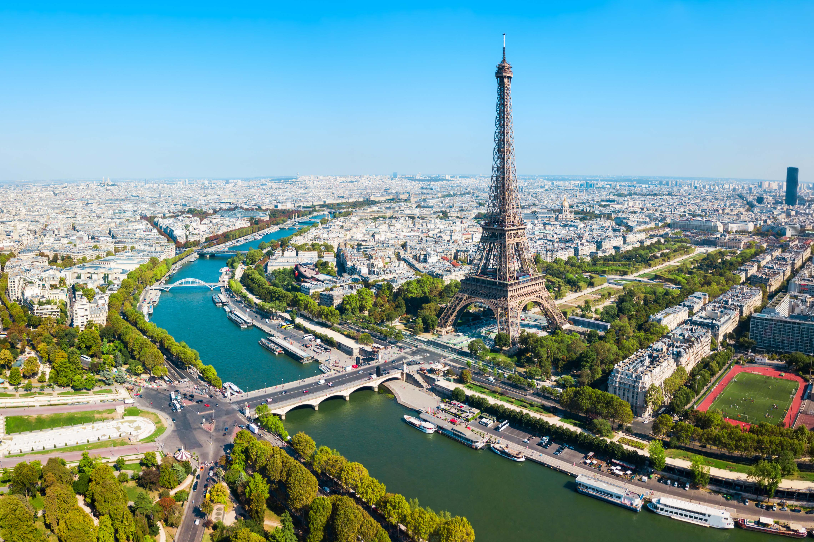
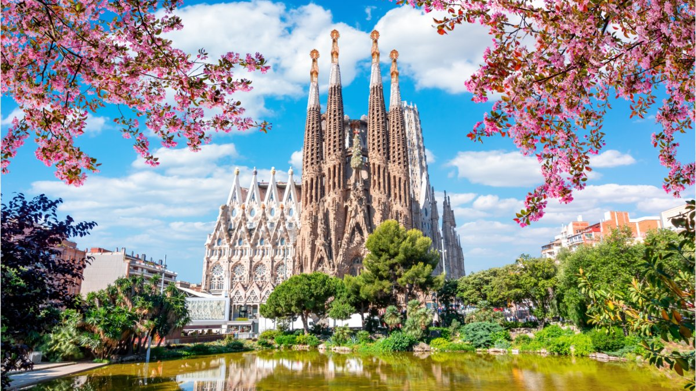

Top 3 cities in Europe
Paris, France

Known as the "City of Love" and the "City of Lights"
Paris captivates
visitors with its iconic landmarks like the Eiffel Tower, Louvre Museum,
and Notre-Dame Cathedral. The city exudes charm, elegance, and a rich
artistic and culinary scene. From strolling along the Seine River to
exploring the charming neighborhoods of Montmartre and Le Marais, Paris
offers a blend of history, culture, and romance.
Rome, Italy
The Eternal City

Rome, the eternal city, is a treasure trove of ancient history and
architectural wonders. With iconic sites such as the Colosseum,
Roman Forum, and Vatican City, it is a haven for history enthusiasts.
The city's grandeur is complemented by charming piazzas, exquisite
cuisine, and world-class art collections. As you wander through its
streets, you'll encounter impressive fountains, picturesque alleyways,
and the vibrant atmosphere of modern Roman life.
Barcelona, Spain
Vibrant, Artistic, Mediterranean

Barcelona is a vibrant and cosmopolitan city known for its unique
blend of Catalan culture, stunning architecture, and lively atmosphere.
The city boasts the architectural marvels of Antoni Gaudí, including
the spectacular Sagrada Família and Park Güell. The vibrant Las Ramblas
promenade, Gothic Quarter, and beautiful beaches add to the city's allure.
Barcelona is also famous for its gastronomy, with delicious tapas and
Catalan specialties.
Google
map link